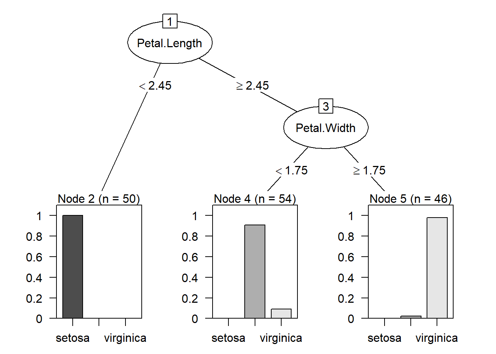

Chapter 7 機械学習
7.1 教師あり学習・回帰分析
機械学習は「教師あり学習」と「教師なし学習」に大別されます。
「教師あり学習」は入力値xと出力値yが対となって観測されるとき、そのxとyの間の関係を導こうとする機械学習手法です。
「教師なし学習」は入力値xのみが観測されるとき、そのxの背後にある何らかの傾向を抽出しようとする機械学習手法です。
7.2 回帰分析
回帰分析は複数の説明変数を用いて目的変数を表すモデルを作成する分析方法です。
- 何らかの関係が想像される変数間の関係を調べる(相関関係を示す)
- 説明変数から被説明変数の値を予測する（予測）
などの用途で使用されます。
7.2.1 回帰分析の前提条件
独立性（説明変数と残差は独立）
等分散性（予測値に関わらず残差の分散が一定）
正規性（残差が正規分布に従う）
線形性（説明変数と目的変数の関係は直線で近似できる）
回帰分析の詳細は
豊田（2012）『回帰分析入門 ―Rで学ぶ最新データ解析―』
管（2016）『例題とExcelで学ぶ多変量解析ー回帰分析・判別分析・コンジョイント分析編ー』
【大学数学】最小二乗法(回帰分析)【確率統計】
【機械学習】線形回帰（前編）| 線形回帰の理論
【機械学習】線形回帰（後編）| 重回帰と正則化
などを参考になさってください。
7.2.2 今回使用するパッケージ
library(tidyverse)
library(tidymodels)
library(car)
library(GGally)7.2.3 Rコード:回帰分析
lm(y~., data)y~. は回帰式に用いる被説明変数と説明変数などのモデルの形式を指定する部分です。yの部分に被説明変数を、~の後ろに説明変数を指定します。y以外のすべての列を説明変数としたい場合は上で示されているように.を入力してください。
data は回帰分析に用いたデータセットの名前です。
ほかにも引数はありますがここでは省きます。
7.2.4 回帰分析の要約
summary(model)7.2.5 モデルを用いた予測
予測にはpredict関数を使います。データはnewdataに指定します。
predict(model,newdata = DATA)7.2.6 逐次選択法（ステップワイズ法）
変数の数を変えながら最適なモデルを探す。
step(lm(y~.,data = ))7.2.7 VIF統計量を算出
carパッケージをインストールして使用します。
回帰分析のモデルを引数にとります。
vif(model)7.2.9 モデルの評価（AIC）
AIC(lm)7.2.10 モデルの評価（MSE,RMSE）
評価指標とは、学習させたモデルの性能やその予測値の良し悪しを測る指標 です。 https://aizine.ai/rmse-rmsle1114/
library(tidymodels)
metrics(data,y1,y2)7.3 ロジスティック回帰
説明変数から確率を計算し予測する一般化線形モデルの一種です。「回帰」と名付けられているが分類に使います。今回は０か１で予測する二項ロジスティック回帰を扱います。3つ以上に分類するときは多項ロジスティック回帰を用います。
7.3.1 一般化線形モデルとは
一般線形モデル(回帰分析で使ったやつ)では目的変数が正規分布に従うことを前提としていましたが、一般化線形モデルでは目的変数が正規分布に従わなくても適用でき、さらに質的変数であっても使用できます。
\[ g(y) = \beta_0x_0 + \beta_1x_1 + \cdots + \beta_nx_n \]
\(g(・)\)関数はリンク関数と言います。
7.3.2 リンク関数
リンク関数は被説明変数を予測可能な形に変形させるものです。被説明変数の分布に対して一意に決まります。
今回は二値分類なので二項分布に対応するリンク関数を適応します。
7.3.3 多重共線性
重回帰分析と同様、多重共線性への注意が必要です。相関係数行列などで確認しましょう。
7.3.4 Rコード:ロジスティック回帰
glm(y~.,data,family=binomial)7.3.5 モデルのあてはめ
type = “response”とすることに注意してください。
pred_1 <- predict(model1,newdata = df_test,type = "response")7.3.6 欠損値の除去
今回のデータは欠損値を含みます。欠損値の処理方法は色々ありますが、今回は欠損値を含む列を削除する方法を取ります。
drop_na(Data)7.3.7 閾値（しきいち）の決定
ロジスティック回帰は1の値を取る確率を求めてきます。何％以上なら1、それ以下なら0とする基準（閾値）を自分で決めなければいけません
Data %>%
mutate(Predicted_value = if_else(column > 0.5, 1, 0))7.3.8 モデルの評価
予測値と実測値のクロス集計表を作成することで正解率を求めることができます。
table("予測値"=col,"実測値"=col)7.4 決定木と応用手法
決定木は分類にも回帰にも用いることができるアルゴリズムです。 分類に使われる決定木を分類木、回帰に使われる決定木を回帰木と呼びます。 ある基準に沿ってデータを何度も分割し予測値を算出します。 分割の基準には分割後の不純度が用いられます。色々なクラスが混在するグループは不純度が高く、ある一つのクラスで構成されている、もしくはある1つのクラスの割合が大多数を占めるほど不純度は低くなります。 決定木を応用した手法にランダムフォレストやXgboostなどがあります。
## Loading required package: grid## Loading required package: libcoin## Loading required package: mvtnorm
7.4.1 ランダムフォレスト
ランダムフォレストは決定木を並列にいくつも繋げたアルゴリズムです。それぞれの決定木が出した結果の多数決を取り結果を算出します。回帰問題の場合は平均を取ります。決定木単体に比べ良い精度が見込めます。ランダムフォレストのようにいくつものアルゴリズムの多数決をとる手法をバギングといいます。
7.4.2 必要なパッケージ
install.packages("rpart") #決定木の作成
install.packages("partykit") #決定木の可視化
install.packages("randomForest")7.4.3 今回使用するデータセット
今回はR標準データセットのirisを使用します。アヤメの特徴から品種を予測を目指します。
Data <- iris
head(Data)7.4.4 データの分割
df_split <- initial_split(Data,p = 0.8)
df_train <- training(df_split)
df_test <- testing(df_split)7.4.5 決定木のモデル作成
model_cart = rpart(Species ~ ., data = df_train)7.4.6 決定木の可視化
plot(as.party(model_cart))7.4.7 モデルの評価
result_cart <- predict(model_cart,newdata = df_test,type="class")
head(result_cart)7.4.8 精度を見るための混合行列
table(df_test$Species,result_cart)7.4.9 ランダムフォレストのモデル作成
model_randm <- randomForest(Species ~ ., data = df_train)7.4.10 モデルの評価
result_randm <- predict(model_randm,newdata = df_test,type="class")
head(result_randm)7.4.11 精度を見るための混合行列
table(df_test$Species,result_randm)7.4.12 モデルの変数の重要度
その特徴量の分割がターゲットの分類にどれくらい寄与しているかを測る指標
print(importance(model_randm))varImpPlot(model_randm)7.5 勾配ブースティング
勾配ブースティングは決定木（もしくは別の弱分類機）を、過去の失敗を活かすように複数作成していくモデル。先に学習したモデルで分類に失敗した訓練データを積極的に分類できるよう、後段のモデルを修正していく。ランダムフォレストと違い、決定木が直列に作られるので並列計算できず、計算量が大きくなる。
7.5.1 フレームワーク
- Xgboost
- 2014年リリース。
- LightGBM
- 2016年リリース。Microsoftが作成。モデル訓練に掛かる時間が短い。
- Catboost
- 2017年リリース。ロシアの企業が作成。Xgboost、LightGBMと遜色ない精度と速度。
どのライブラリも微妙な違いがあり、問題によって精度の良し悪しが変わってくる。
7.5.2 今回使用するパッケージ
library(tidyverse) #前処理に使用
library(tidymodels) #データの分割に使用
library(data.table) #データフレームの変換に必要
library(xgboost) #Xgboostパッケージ
library(Matrix) #Xgboost用のデータ形式に変換7.5.3 Xgboostを使用する際の注意点
- モデル作成に時間がかかる。気長に待とう。
- R標準のデータ形式（dataframeやlistなど）のままでは使用できない。専用のパッケージを使ったデータの加工が必要。
- 標準化、欠損値の処理は必要ない。
- カテゴリ型（facter型、character型など）はLabel encoding で数値に変換
- 例)男性,女性,その他,答えたくない ⇒ 0,1,2,3
- ダミー変数(one-hot-encoding)は決定木系のライブラリには不向き
7.5.4 Label encoding
Data_factor_label <- Data %>%
select_if(is.character) %>%
lapply(as.factor) %>%
lapply(as.numeric) %>%
as.data.frame() #元データからcharacter型の列を取り出しfactor型に変換、その後factor型からnumeric型に変換。
Data_LE <- Data %>%
select_if(is.numeric) %>%
cbind(Data_factor_label) #元データのnumeric型の列を取り出し、上でLabel encodingした列を結合。（もっといいやり方があるかも…）
7.5.4.1 関数の働きをひとつづつ
select_if() #カッコ内の真偽値で列を絞る
is.character() #列に含まれるデータがcharacter型であればTrueを返す関数。facter型,numeric型など別のデータ型にも同様の関数が存在。
lapply() #与えたデータセットに含まれる各要素にカッコ内の関数を適応する。データをlist形式で返してくる。
as.factor() #factor型に変換別のデータ型にも同様の関数が存在。
as.numeric() #numeric型に変換
as.data.frame() #データフレーム型に変換
cbind()#データフレーム同士を結合7.5.5 データの分割
df_split <- initial_split(Data,prop = 0.8)
df_train <- training(df_split)
df_test <- testing(df_split)7.5.6 データフレームの変換
model.data.dt <- data.table(df_train,keep.rownames=F)
pre.data.dt <- data.table(df_test,keep.rownames=F) #data.frameをdata.tableに変換
model.data.mx <- sparse.model.matrix(y~.,model.data.dt) #yに目的変数の列名を指定。~の後ろは説明変数を指定。y以外の全列を指定したいときは.を指定。
model.data.dm <- xgb.DMatrix(model.data.mx,label=model.data.dt$y)#data.tableをxgb.DMatrixに変換。変換に使うdata.tableの目的変数の列名を指定。
pre.data.mx <- sparse.model.matrix(y~.,pre.data.dt) #yに目的変数の列名を指定。~の後ろは説明変数を指定。y以外の全列を指定したいときは.を指定。
pre.data.dm <- xgb.DMatrix(pre.data.mx,label=pre.data.dt$y) #data.tableをxgb.DMatrixに変換7.5.7 パラメータ
Xgboostにはユーザーが設定するパラメータが多数存在します。
- eta [デフォルト = 0.3] 範囲 0~1
- 過学習防止のためのパラメータで学習率を調整する。 小さくすると、モデルの精度を高めることが可能。計算コストは増える（モデル作成が遅くなる） 値によっては繰り返し回数が増えるほど(nroundsの値が大きいほど)過学習が進み精度が低下する恐れがある。
- gamma [デフォルト = 0] 範囲 0~∞
- 決定木の葉は多ければ多いほど木が複雑となり、過学習を起こしやすくなる。このパラメータはその葉の数に対するペナルティー。値が大きいほどアルゴリズムは保守的になる（過学習しにくくなる）。
- max_depth [デフォルト = 6] 範囲 0~∞
- 決定木の深さの最大値を意味する。値が大きいとほどモデルが複雑になるため、過学習する可能性が高くなる。
- min_child_weight [デフォルト = 1] 範囲 0~∞
- 決定木の葉の重みの下限を意味する。重みの合計値がmin_child_weight未満であれば、それ以上の分割は行われない。値が大きいほど単調な決定木となり、過学習を抑制。
- max_delta_step [デフォルト = 0] 範囲 0~∞ *値を設定することで、各決定木の重みの推定に制約をかけることができる。0の場合は制約なしとなり、整数値を設定するとモデルをより保守的にする。あまり必要のないパラメータであるらしい。
- subsample [デフォルト = 1] 範囲 0~1
- 各決定木においてランダムに抽出される標本(データ)の割合を意味する。小さくすることで過学習を避けることができますが、保守的なモデルとなる。
- colsample_bytree [デフォルト = 1] 範囲 0~1
- 各決定木においてランダムに抽出される列の割合を意味する。この値を設定することで説明変数を全て使わずに設定された割合でランダムに抽出された説明変数のみを使用してモデルを作成する。
- colsample_bylevel [デフォルト = 1] 範囲 0~1
- 決定木の各レベル単位での分割における列のsubsample比率を意味する。subsampleとcolsample_bytreeを設定していればこのパラメータまでチューニングする必要はない。
params <- list(
eta=0.01,
gamma=0,
max_depth=15,
min_child_weight=1,
max_delta_step=0,
subsample=1,
colsample_bytree=1,
colsample_bylevel=1,
lambda=1,
alpha=0
) #デフォルトの値7.5.8 モデルの作成
objectは回帰か分類化によって変更してください。 引数 ・reg:linear(線形回帰)
・reg:logistic(ロジスティック回帰) ・binary:logistic(2項分類で確率を返す) ・multi:softmax(多項分類でクラスの値を返す) multi:softmaxを指定した場合、num_classの指定が必要
nrounds ブースティングを行う回数(決定木の本数)を意味する。 クロスバリデーションを行うことで最適なブースティング回数を求めることができる。
xgb_cv <- xgb.cv(
data = model.data.dm,
nrounds = 50000, # 最大の繰り返し回数を指定。十分大きな値を指定する。
nfold = 8, # クロスバリデーションの分割数を指定
params = params,
early_stopping_rounds = 100 # ある回数を基準としてそこから100回以内に評価関数の値が改善しなければ計算をストップ
)xgb.result <- xgb.train(params=params, data=model.data.dm, label=model.data.dt$SalePrice, objective="reg:linear", booster="gbtree",nrounds = 500)7.5.9 モデルの評価
pred <- predict(object=xgb.result,newdata=pre.data.dm)7.5.10 このパッケージを使用する際の問題点と解決策
問題点：デフォルトのXgboostパッケージにはパラメータを調整する関数が存在しない。手動で設定するか、自分で関数を作るしかない。
解決策：caret上でxgboostを使用しパレメータの探索を行わせる。
7.5.11 caretとは
caretとは、Classification And Regression Trainingの略
機械学習に必要な
- データの分割（trainデータとtestデータの分割）
- 前処理
- 特徴量選択
- モデルの訓練・評価(グリッドサーチなど)
の一連の操作を行えるパッケージ。多くのアルゴリズムをサポート。
今回はモデルの訓練のために使用。
似たパッケージにtidymodelsやmlrなどがある。比較的歴史が長くサポートサイトが豊富なためcaretを使用。
使用者が増えて参考記事が増えてくればtidymodelsが良い選択肢になるだろう。
library(caret)
library(doParallel)7.5.12 caretを使用したXgboostの使用法
7.5.13 並行処理
detectCores(logical = FALSE) #自分のPCのコア数を確認
cl <- makePSOCKcluster(4) #自分でコア数を指定
registerDoParallel(cl)7.5.14 パラメータ
xgb_grid_1 <- expand.grid(
nrounds= 1000,
eta=0.1,
max_depth = c(1:10),
colsample_bytree = seq(0.5,1,0.1),
min_child_weight = 1,
gamma = 0,
subsample = seq(0.5,1,0.1)
)
xgb_trcontrol <- trainControl(
method="cv",
number = 8,
verboseIter = TRUE,
returnData=FALSE,
returnResamp = "all",
allowParallel = TRUE,
)7.5.15 モデルの作成
result <- train(
x = as.matrix(df_train %>% select(-SalePrice)),
y= df_train$SalePrice,
trControl = xgb_trcontrol,
tuneGrid = xgb_grid_1,
method="xgbTree"
)7.5.16 モデルの評価
pred <- predict(result, df_test)手順(https://www.marketechlabo.com/r-xgboost-tuning/ より)
1.学習率etaの初期値を決める。
XGBoostでは基本的に学習率etaが小さければ小さいほどいい。 ただし小さくすると学習に時間がかかるので、何度も学習を繰り返すグリッドサーチでは他のパラメータをチューニングするためにある程度小さいetaの値を決めておいて、そこで他のパラメータをチューニングする。
他のパラメータの値が決まってからetaを時間との兼ね合いでチューニングする（小さくしていく）。
デフォルトの0.3では大きいので0.01～0.1あたりに設定する。
2.木の複雑さを指定するパラメータmax_depth, min_child_weightを同時に決める
3.（gammaを決める）
4.データのサンプリングの度合いを指定するパラメータsubsample,colsample_bytreeを同時に決める。いずれも0.5から1の間あたりで設定するといい。
5.（正則化パラメータalpha, lambdaを同時に決める）
6.ブースティングの繰り返し回数nroundsはグリッドサーチではなく、上記のパラメータの組合せごとに繰り返し計算（ブースティング）の手順で決める。
7.etaを小さくしていく